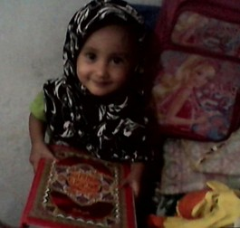

Beberapa hal yang mau aku tulis buat kamu.
Kamu itu lucuu banget!!

disini tu kamu keliatannya bahagia banget!
Satu Hal Kecil Tentang Kamu
apapun yang terjadi kamu tu pasti ketawa kalo lagi sama aku
Satu Harapan Dariku
semoga di ulang tahun kamu ini, di kurangi laprak nya ^_^
Satu Alasan Kamu Layak Dirayakan
kamu gak jadi nulis surat pengunduran diri